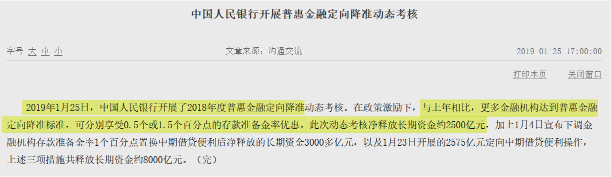

今年的货币环境是“松紧适度”@AndrewXAndrew:一天一小好，几天一大好，好消息不断！1月25日，PBoC对达标金融机构定向降准0.5% or 1.5%，理由“普惠金融”，净放水约CNY 2500亿； 
回复@南海恶神的师傅:赚了指数不赚钱不是开玩笑的//@南海恶神的师傅:今天竟然还有一多半股票是跌的，指数大法好//@ETF拯救世界:回复@就爱喝X:军工不 ， 不来//@就爱喝X:关注的ETF中，只有一个军工是绿的，其它都是涨，全市场股票一半涨一半跌@ETF拯救世界:多大点事，踏踏实实的。
回复@就爱喝X:军工不 ， 不来//@就爱喝X:关注的ETF中，只有一个军工是绿的，其它都是涨，全市场股票一半涨一半跌//@ETF拯救世界:回复@xixcgw6143100976:有。 低位买够，涨跌都舒服。说一万次了。@ETF拯救世界:多大点事，踏踏实实的。
回复@xixcgw6143100976:有。 低位买够，涨跌都舒服。说一万次了。//@xixcgw6143100976:老大，怎么克服想追高的心理，有什么经验么？虽然150份一直在跟车，然而还是贪心想再加点再多赚点，应该有不少人会有这种心理。@ETF拯救世界:多大点事，踏踏实实的。
回复@NFHSong:是吗。昨天十几亿基数的球队又被受到发达国家制裁的小国干了3：0。很多东西不是基数大就行//@NFHSong:回复@慎独慎入慎犬儒:不尽然，人多。。。按照比例来说，出人才就多---:根据相关法律法规和政策，该微博已被删除。查看帮助： 网页链接
对于普通人，操心那些有的没的毫无用处，不必天天自寻烦恼。两点原则：第一，事物的发展不是线性的。四十年前，二十年前，现在，你看到的人口问题都不一样。整个世界更是天翻地覆。不要用现在的情况线性推一两百年后。这个世界有它解决问题的方式。第二，大致了解目前的情况和趋势，推演自己有生之年会发生什么。然后未雨绸缪早做准备。再差的时候，人的生活状态也不一样。有机会细说我的一点想法。
以目前的国土面积，有6-8亿人是最合适的。提高人口素质，提高劳动生产率，提高科技化水平。每个人空间大一点，挺好。当然，一代人的痛苦不可避免了---:根据相关法律法规和政策，该微博已被删除。查看帮助： 网页链接